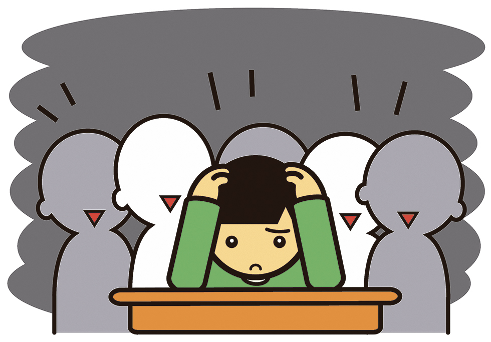
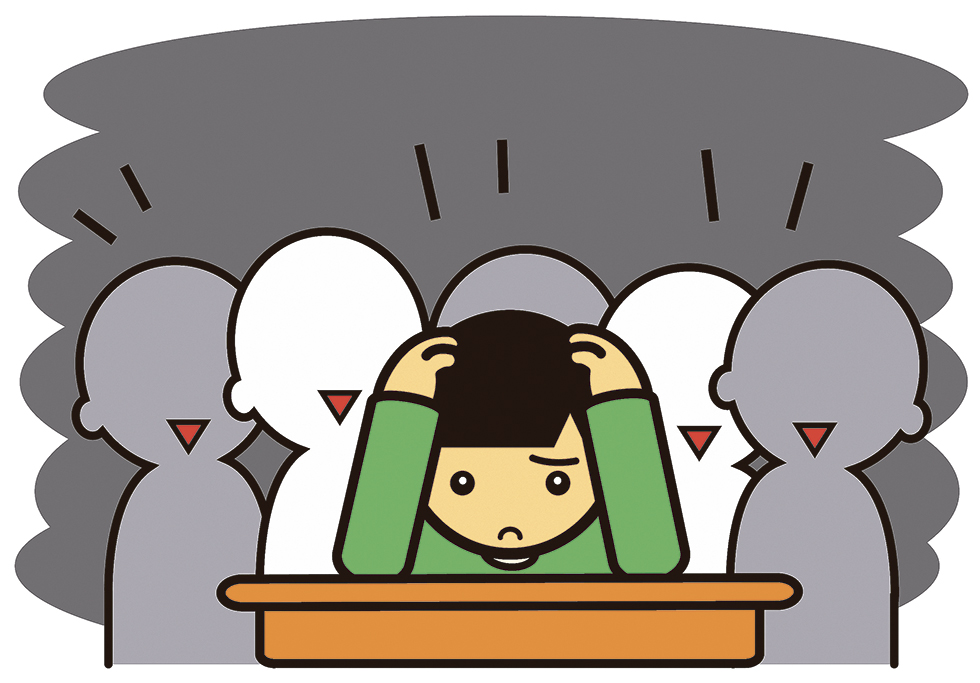

Salud mental
"La felicidad no es la ausencia de problemas, sino la capacidad de afrontarlos"
Salud mental
¿Que es la Salud mental?
La salud mental se refiere al bienestar emocional, psicológico y social, que afecta la forma en que pensamos, sentimos y actuamos. Es más que la ausencia de una enfermedad mental, ya que es esencial tanto para la salud general como para la calidad de vida.La salud mental incluye el equilibrio social y conductual de una persona con su entorno sociocultural, lo que garantiza su participación social, capacidad para afrontar dificultades y percepción de la realidad.Además, ayuda a determinar cómo manejar el estrés, relacionarse con otros y tomar decisiones..
 

¿es buena la salud mental?
La salud mental es un componente fundamental del bienestar general de una persona, permitiendo hacer frente al estrés, interactuar positivamente con los demás y tomar decisiones informadas. Tener una buena salud mental no significa ausencia de problemas, sino contar con herramientas que faciliten una mejor calidad de vida, incluso en medio de las dificultades. Es importante destacar que la salud mental no es un privilegio, sino un derecho humano y de justicia social que debe ser accesible para todos, especialmente en contextos de desigualdad y conflicto social
En psicologia como se ve...?
El consenso científico acerca de las condiciones de la salud mental contempla desórdenes neurobiológicos y muy particularmente neuroquímicos. Otras funciones del cerebro identificadas como contribuyentes a las condiciones de la salud mental incluyen el reloj circadiano, la neuroplasticidad, el canal iónico, la transducción de señal, la cognición, las redes cerebrales,entre muchos otros. Imágenes del cerebro demuestran cambios físicos en la neuroanatomía de desórdenes como la esquizofrenia, el autismo y los llamados trastornos bipolares. Los estudios incluyen también la observación de factores ambientales, del desarrollo y el nivel de relaciones interpersonales del individuo. Las mejores evidencias médicas, como son definidas por el Instituto Nacional de Salud y Excelencia Médica del Reino Unido en su guía de tratamientos indican que el desorden bipolar, por ejemplo, requiere una combinación de medicamentos, psicoterapias, autoayuda y soporte social. Por su parte, las agencias de salud mental promueven en la actualidad el estímulo de métodos de autoayuda y superación personal. Otras formas de estados “psicológicos no-sanos” (psicopatología), como se contempla desde la psicología,[23] pueden relacionarse con procesos mentales (cognición) o aprendizaje y no necesariamente con categorías psiquiátricas.